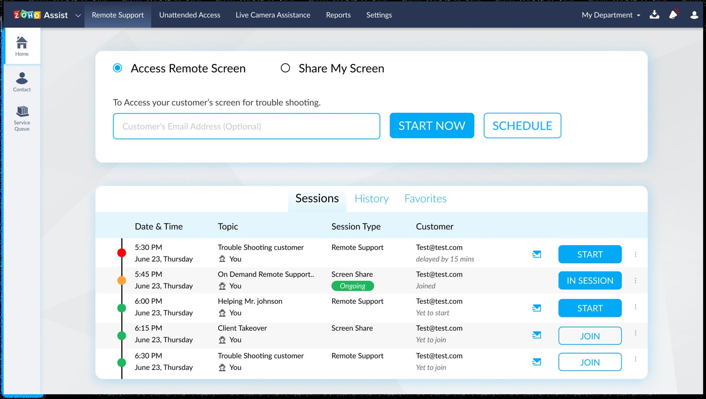

← Back to portfolio
Zoho Assist — Remote Support Dashboard Redesign
Type: UX case study / UI exploration (Figma) · Scope: Dashboard redesign + presentation
A redesign exploration of Zoho Assist's remote-support dashboard — the "Access Remote Screen" / "Share My Screen" home view, session list (Sessions / History / Favorites), and supporting components ("Client information," "Enter your action").

Notes
- The Figma file includes a 15-slide presentation deck alongside the screens — this looks like it was packaged up to walk someone through the redesign rationale, not just deliver final screens.
- Good example of working within an existing product's information architecture rather than designing from a blank slate.
Figma file: https://www.figma.com/design/SoZV6g0ZE06hZEUKbLHAor/